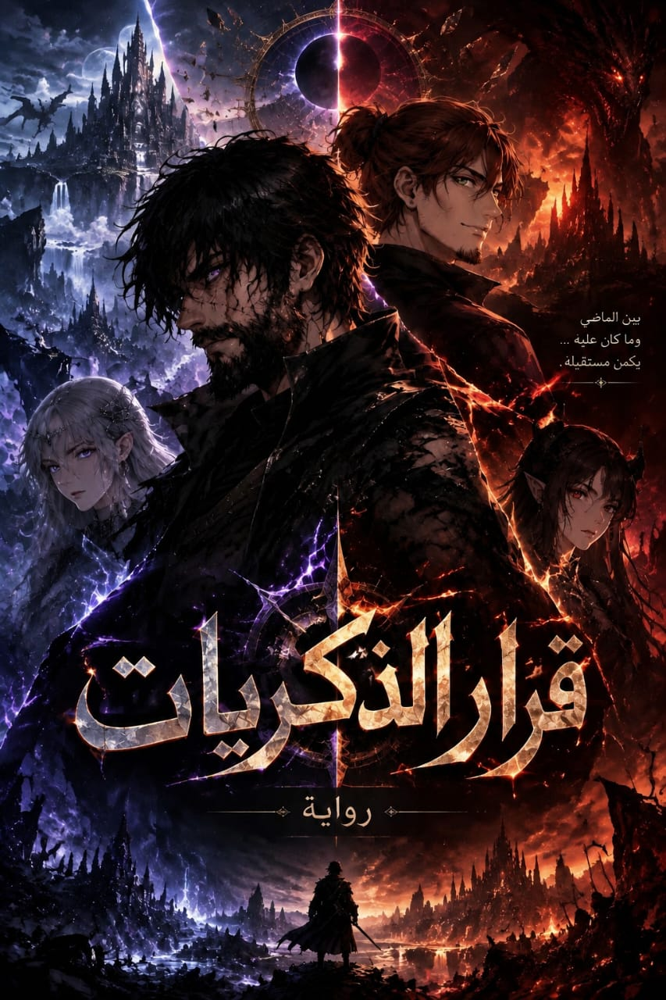

THE REALMS
الممالك
مالتيكس، الغابة الزرقاء، مملكة الإلف، وعوالم لا تثبت قوانينها أمام أصحاب الدوائر العجيبة.
◈بين ما نسيه الماضي… وما يختاره الحاضر.

رحلة بين ممالك البشر والإلف والجحيم، حيث كل بوابة قد تكشف جزءًا من الحقيقة… أو تخفيها أكثر.
مالتيكس، الغابة الزرقاء، مملكة الإلف، وعوالم لا تثبت قوانينها أمام أصحاب الدوائر العجيبة.
◈المكان الذي يكشف لآريان حقيقة لم يكن مستعدًا لها: إمبراطور غائب يعود بلا ذاكرة.
✦إمبراطور مملكة الجحيم وسيد النار… أم الرجل الذي اختار أن يبدأ من جديد؟
أسرار، أخطاء، وذكريات لم تُدفن.
اختيارات جديدة قد تغيّر معنى كل ما سبق.
رجل فقد ذاكرته، لكن قوته ترفض أن تنسى.
اسم من الحرب القديمة يعود كلما اقتربت الحقيقة.
شخصيات لا نعرف إن كانت تهرب من ماضيها… أم تتجه نحوه.
كل فصل يفتح بابًا جديدًا… ولا يضمن أن تغلقه كما فتحته.